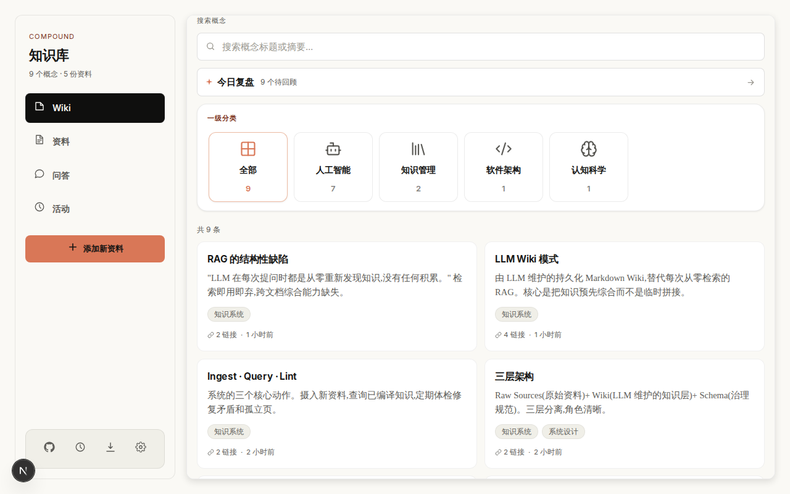
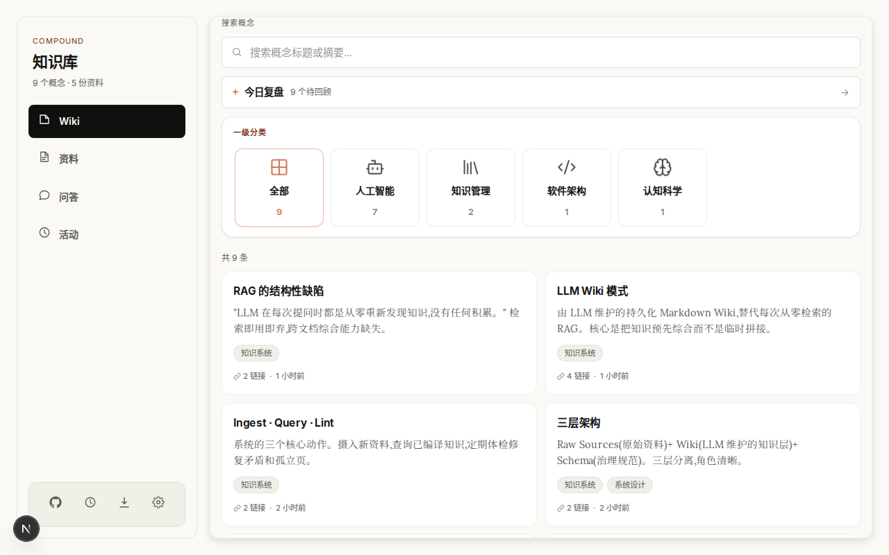
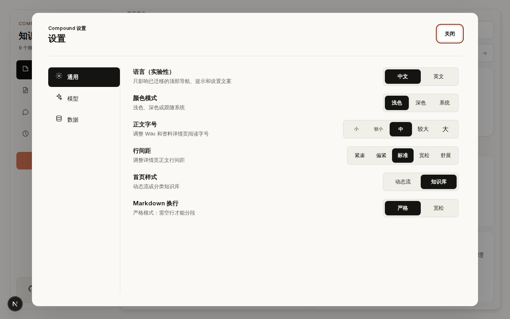
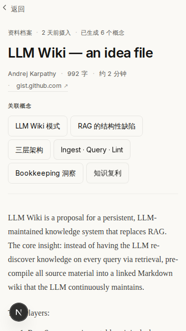

把隐蔽风险变成可验证的系统能力
过去依赖时间戳判断新旧数据，编辑和删除可能在另一台设备上消失。现在每次变化都有连续游标和删除记录，客户端能够明确知道应该更新什么、删除什么。
同样地，备份不再只是复制一个数据库文件，而是带完整性检查、校验和、安全回滚与自动恢复演练。
Compound 深度优化报告
这次优化没有停在换颜色或调间距，而是同时修复同步一致性、安全边界、数据恢复、并发可靠性和真实使用体验。
main 已推送
最终提交 763ff28

Compound 现在不仅能保存和浏览知识，也能在多设备、异常网络、并发任务和生产部署中保持一致与可恢复。
用户看到的是更顺手的界面，系统内部得到的是一套更可靠的同步、安全、备份与验证底座。
知识库最危险的问题通常不会立刻出现在界面上。它们会在换设备、网络中断、任务并发或服务重启后才暴露。
过去依赖时间戳判断新旧数据，编辑和删除可能在另一台设备上消失。现在每次变化都有连续游标和删除记录，客户端能够明确知道应该更新什么、删除什么。
同样地，备份不再只是复制一个数据库文件，而是带完整性检查、校验和、安全回滚与自动恢复演练。
新链路以服务端 SQLite 为事实来源，用单调游标把变化有序送到每个浏览器，同时让后台任务和恢复流程拥有清晰边界。
IndexedDB 先展示已有内容，随后按游标拉取增量变化。
更新、删除、分页与重置都由同一条变更日志驱动。
数据、限流、任务租约和同步游标统一持久化。
Worker 完成、失败和心跳都必须匹配当前租约版本。
点击每一项可以查看优化前后的差异。主页面只保留结论，技术细节按需展开。
主要依赖更新时间比较，删除没有稳定传播路径，分页期间还可能读到变化中的数据。
每次更新和删除写入连续变更日志，全量快照固定上界，旧游标失效时自动重新对齐。
自定义模型地址虽然检查域名，但 DNS 解析和重定向阶段仍有绕过风险，错误日志也可能保留响应片段。
实际连接使用公共 IP 校验，仅允许同源 307 或 308 重定向，日志只记录长度、状态和错误类型。
数据库恢复缺少完整性、校验和、外键与回滚验证，出问题时恢复过程本身也可能带来风险。
在线备份会运行 quick check 和 SHA256，恢复先创建安全备份，再原子替换并验证外键。
较慢请求可能最后返回并覆盖新页面，资料保存中继续输入也可能被前一次保存结果清掉。
详情请求使用目标代次保护，资料保存采用 latest wins 单飞队列，Worker 使用租约版本栅栏。
示例数据可能先于云端同步写入，资料页一次读取全部记录，Sentry 浏览器包即使未配置也进入首屏。
先同步再决定是否播种，已有本地数据立即显示，列表按需读取，Sentry 仅在配置 DSN 后动态加载。
Lighthouse 运行错误可能被替代分数掩盖，Docker 只构建不启动，缺少真实健康检查。
审计遇到运行错误、基线缺失或 flaky 直接失败，CI 真正启动镜像并请求健康接口。
视觉调整保持 Compound 原有的暖色、纸张感和阅读密度，重点解决入口不清楚、样式闪烁、弹层失控和移动端重复结构。

资料卡片样式移动到列表自己的 CSS，冷加载时不再依赖详情模块。
详情覆盖层出现时隐藏重复主头部，阅读空间和返回路径更清楚。
宽度和高度受到视口约束，标签支持方向键、Home 和 End 操作。
打开时聚焦可操作内容，背景进入 inert，关闭后焦点回到原按钮。
切换到 Pointer Events，并提供方向键、Home、End 和分隔条语义。
外链只接受 HTTP 与 HTTPS，Mermaid 使用严格模式并二次净化 SVG。


本地完整检查与 GitHub 干净环境重复执行，最终候选还经过生产构建、Docker 冷构建和容器启动验证。
Prettier、ESLint、TypeScript、Knip、重复代码和技术债扫描全部通过。
396 项单元测试通过，全量 Playwright E2E 通过且没有 flaky。
PWA 100、Accessibility 100、Best Practices 96，axe 严重问题为 0。
SQLite 备份、校验、恢复和标记回读演练通过。
Next.js standalone 构建、Docker 镜像、容器启动和 /api/health 全部通过。
本机与 GitHub Ubuntu 的中文字形不同，因此保留本地和 CI 两套基线。资料详情正文只对 Lora 栅格噪声使用 1.5% 阈值，其他界面仍为 1%。
未配置 FACTORY_API_KEY 时，Droid Wiki
明确跳过并保持成功；配置后才执行真实 Wiki 生成。
当前 v4 Action 被 GitHub 强制运行在 Node 24，质量门禁不受影响。后续可在官方稳定大版本发布后集中升级。
本报告的 Cloudflare 快速通道没有长期在线保证。正式访问路径仍以推送后的生产站为准。
这轮修复已经闭环。后续重点不是继续堆功能，而是观察真实使用数据并保持恢复与视觉门禁可重复。